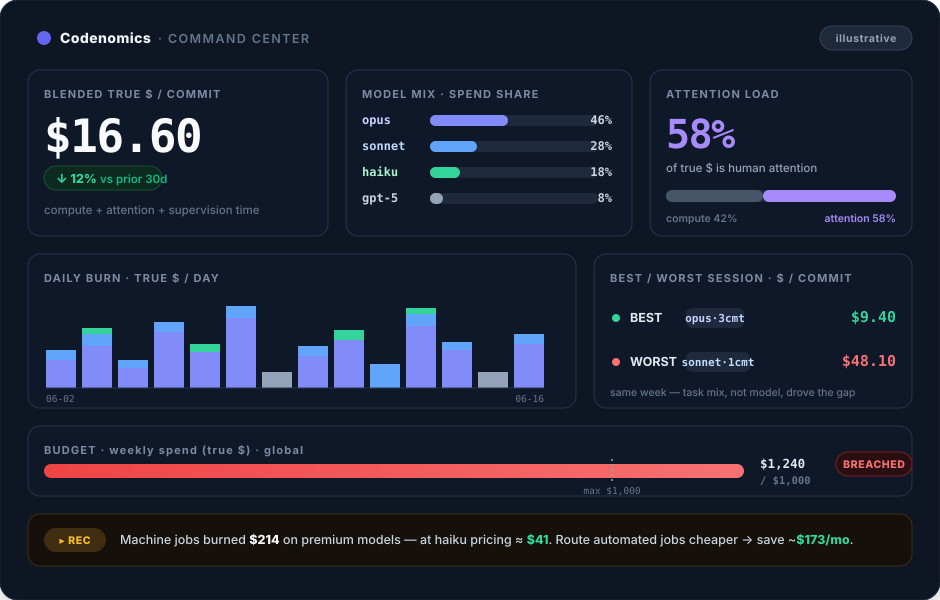
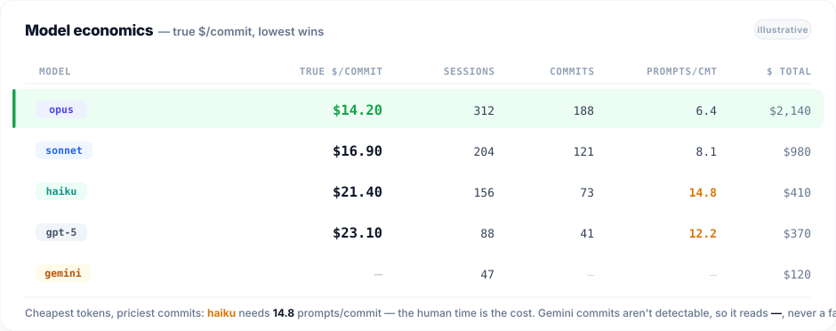
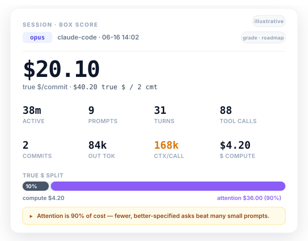
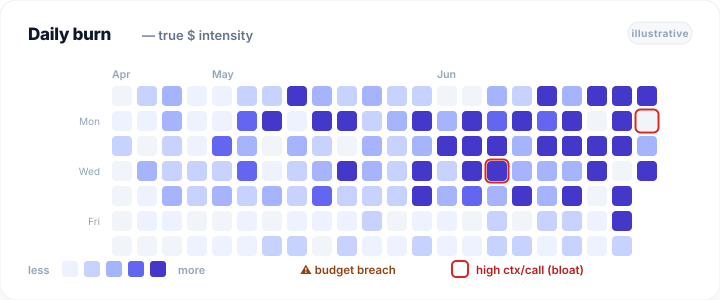

One command turns the logs your agents already wrote into a command center for engineering economics — which model ships cheapest, what each session actually cost, and where the money and attention went. All on your machine.

Every model and agent ranked by true $/commit — the lowest wins. The cheapest tokens often land at the bottom: they need more prompts and more of your time to ship the same work.

Open a single run and see exactly what it took: prompts, turns, tool calls, commits, output tokens, and the context re-read per call that flags a bloated session. The true $ split shows the part a token meter can't — how much of the cost was your attention.
Recommendations are generated from your own patterns — high prompts-per-commit, low cache hit rate, premium models on automated jobs.

Every day, shaded by true-$ intensity. Budget breaches and high-context "session-bloat" days surface at a glance — closer to a risk dashboard than a usage chart.

The leaderboard, session box scores, daily burn, budgets, and recommendations ship today and compute entirely locally. PR- and revert-aware "deliverable" ground truth, and cross-team benchmarks, are on the roadmap and labeled as such wherever they appear. See exactly how it's measured →